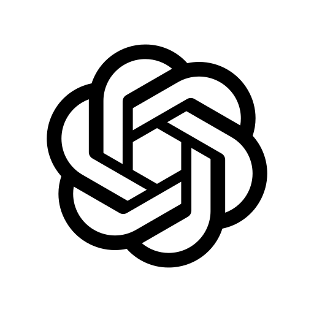

비즈니스 및 기술 문서
Cowork로 한 번에 HTML로 뚝딱!
자료 수집부터 보고서 디자인·공유까지, 한 번에 끝내는 스마트 업무 자동화
사내에 흩어져 있는 Word · PowerPoint · Pages · Outlook · Teams 자료와 웹 검색 결과를 끌어모아, 보기 좋은 HTML 문서와 슬라이드로 자동 완성합니다.
한 번에 끝내는 스마트 업무 자동화

아래는 M365 Cowork에 대화형으로 요청하여 실제로 만들어낸 결과물 유형입니다. 스타일, 레이아웃, 코드 하이라이트까지 AI가 처리합니다.
기술 가이드 문서
문서형 HTML개념 설명, 코드 블록, 표, 하이라이트 박스가 포함된 완성도 높은 기술 문서를 대화 한 번으로 생성합니다.
프레젠테이션 슬라이드
슬라이드형 HTML키노트 스타일의 슬라이드를 HTML로 생성합니다. 페이지 넘김, 시각적 레이아웃, 아이콘까지 AI가 디자인합니다.
비교 분석 & 요약
정리형 HTML여러 기술·서비스를 비교하는 표, 장단점 카드, 의사결정 플로우차트를 시각적으로 구성합니다.
핵심: 예전에는 HTML 파일을 만들려면 CSS, JavaScript를 직접 작성해야 했지만, M365 Cowork에게 원하는 형태를 설명하면 하이라이트, 반응형 레이아웃, 코드 블록까지 갖춘 문서를 몇 분 안에 받을 수 있습니다.
왜 이 방법인가
주제는 비슷한데 정보가 여러 곳에 흩어져 있나요? 수집·정리·디자인까지 M365 Copilot이 한 번에 처리합니다.
- 자료가 Word · PPT · Pages · Outlook · Teams에 흩어져 있음
- 웹 검색 결과까지 더해 일일이 정리하려면 시간이 오래 걸림
- Markdown 만으로는 시각적 강조에 한계가 있음
- 디자인 일관성을 맞추려면 별도의 템플릿 작업이 필요
- 초안 이후에는 세부 수정 · 발표용 변환이 다시 일거리
- Researcher Agent가 사내 문서 + 웹 검색을 심층 수집
- M365 연결로 Word/PPT/Pages/Outlook/Teams 정보를 한 곳에서 활용
- Cowork가 하이라이트 · 카드 · 코드 블록까지 갖춘 HTML 자동 생성
- 같은 대화에서 슬라이드 형태로 재구성 가능
- 필요하면 Word · PPT로 전환해 세밀하게 편집
전체 파이프라인
자료 수집
HTML 생성
확인
Word · PPT
전환 편집
Researcher Agent로 자료 수집
M365 Copilot의 Researcher Agent를 이용하면 사내 문서와 웹 검색 결과를 심층적으로 조사하여, 원하는 주제에 맞는 자료를 한 번에 모을 수 있습니다. 수집 결과는 Word · PowerPoint · PDF · 인포그래픽 · Markdown · Pages 형태로 저장되어 이후 단계에서 재사용하기 편리합니다.
연결되는 데이터 소스
사용자가 M365 Copilot에 요청을 보내면, 내부의 Researcher Agent(또는 Cowork Agent)가 이를 처리합니다. 사내 콘텐츠는 Microsoft Graph를 통해 권한 범위 안에서만 조회되고, 웹 검색·플러그인 등 외부 지식은 별도의 외부 도구·커넥터 채널로 보강됩니다. 모든 접근은 Microsoft Entra ID로 인증된 사용자의 ACL 권한을 기준으로 검증됩니다.

GPT권한 기반 통합 액세스 레이어
웹 검색 · 플러그인으로 확장
프롬프트 예시 - Researcher Agent
"AI 시대에 내가 일하는 방식은 어떻게 바뀌고 있는가?" 에 대한 주제에 대해서 현업과 개발자 관점에서 어떻게 일하는 방식이 변화하고 있는지를 조사해줘.
실제 작업 화면
- Markdown — 이후 Cowork 프롬프트에 통째로 붙여 넣기 쉬움
- Pages — 팀과 공동 편집하며 자료를 보강할 때 유리
- Word — 사내 결재/공식 배포용 원본으로 재사용
 Cowork에서 HTML 문서 생성하기
Cowork에서 HTML 문서 생성하기
Step 1에서 모은 자료를 기반으로, M365 Copilot Cowork에 원하는 결과물을 요청합니다. Markdown으로 표현하기 어려운 카드 레이아웃 · 하이라이트 박스 · 아이콘 · 코드 블록까지 자동으로 구성됩니다.
프롬프트 예시 - Cowork Agent (기술 문서 및 슬라이드 HTML을 동시에 만들 때)
AI 시대 일하는 방식 변화 조사.page 첨부된 Page에 요약된 내용을 바탕으로, 고객에게 전달하기 위한 두 가지 형태의 HTML 문서를 작성해줘. 1. 웹 문서 형태의 HTML (한 페이지 세로로 읽는 형태) 2. 슬라이드 형태의 HTML (페이지 넘기기 기능 포함) 요구사항: - 전체 배경은 흰색 - 제목, 소제목, 본문이 구조적으로 잘 보이도록 구성 - 핵심 메시지나 고객에게 꼭 강조해야 할 부분은 Highlight 처리 - (슬라이드 HTML의 경우) 불필요한 설명은 줄이고, 짧고 명확한 문장 위주로 요약, 슬라이드 화면 비율 고려 - 고객이 빠르게 이해할 수 있도록 읽기 쉬운 레이아웃 유지 결과물은 바로 사용 가능한 HTML 코드 형태로 제공
실제 작업 화면
단계적 고도화 전략
한 번에 완벽한 결과를 기대하기보다, 대화를 이어가며 점진적으로 품질을 높이세요. 아래 내용을 함께 고려해서 프롬프트를 작성하세요.
출력 파일 위치 찾기
Cowork가 생성한 HTML 파일은 로컬 파일 시스템에 자동 저장됩니다.
파일 저장 경로 (Windows)
폴더 구조
실제 작업 화면
Word · PowerPoint로 전환해서 섬세하게 편집
HTML은 시각적으로는 강력하지만, 세부 문구 수정 · 순서 변경 · 이미지 교체 같은 작업은 익숙한 도구가 더 편합니다. Cowork에게 같은 대화 안에서 Word 또는 PowerPoint로 전환해 달라고 요청하면, 편집과 소유권 관리가 한층 쉬워집니다.
전환 요청 예시
"방금 만든 HTML 웹문서는 본문 스타일은 제목 1~3 계층 구조로 맞추고, 표와 이미지 캡션은 그대로 유지하면서 Word 파일로 전환해줘. 그리고 HTML 슬라이드는 디자인의 일관성을 유지하면서 PowerPoint 파일로 전환해줘."
실제 작업 화면
권장 작업순서
HTML에서 구조와 콘텐츠를 먼저 확정하고, 수정이 필요할 때 Word/PPT로 변환하세요. 콘텐츠 작업과 디자인 마감이 분리되어 수정 비용이 크게 줄어듭니다.
고급 활용 팁
Cowork로 먼저 HTML 슬라이드를 만들고, 그 구조를 기반으로 PowerPoint를 요청하면 일관된 디자인의 프레젠테이션을 얻을 수 있습니다.
- "이 주제를 10장 슬라이드로 정리해서 HTML로 만들어줘"
- HTML 슬라이드의 내용과 구조를 검토·수정
- "이 HTML 슬라이드를 기반으로 PowerPoint 파일로 변환해줘"
한 번의 프롬프트로 모든 걸 끝내려 하지 말고, 두 에이전트를 역할 분담하세요.
- Researcher Agent에게 "주제 · 사내 소스 · 웹 소스"를 주고 심층 조사 → Pages 저장
- 저장된 Pages 링크를 Cowork에 첨부하며 HTML 생성 요청
- 출처 각주 · 인용 표기까지 유지되며 신뢰도 있는 결과 확보
- 기존 HTML을 Cowork 대화에 첨부한 뒤, "특정 섹션만" 수정하도록 요청
- 예: "3번 섹션의 표를 최신 자료 기준으로 다시 만들어줘. 나머지는 그대로 유지해줘."
- 전체 재생성보다 변경 폭이 작고, 레이아웃·색상 일관성이 유지됩니다.
- 문서 폴더 아래
images/하위 폴더를 만들어 이미지 파일을 함께 복사 - HTML 내 이미지 경로를 상대 경로(
images/screenshot.png)로 수정 - 외부 URL 이미지는 가능하면 로컬로 다운로드하여 안정성 확보
더 높은 품질의 HTML을 얻기 위한 프롬프트 기법: